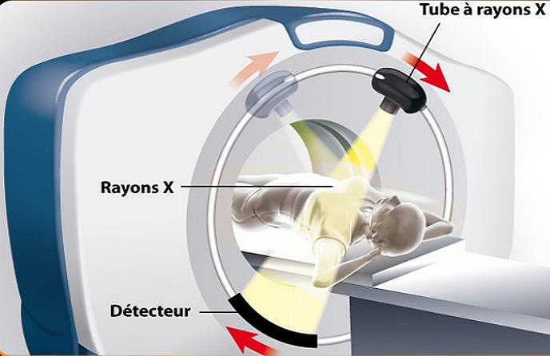
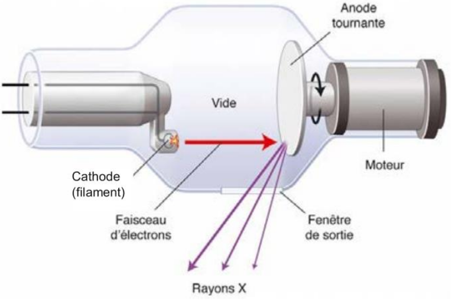
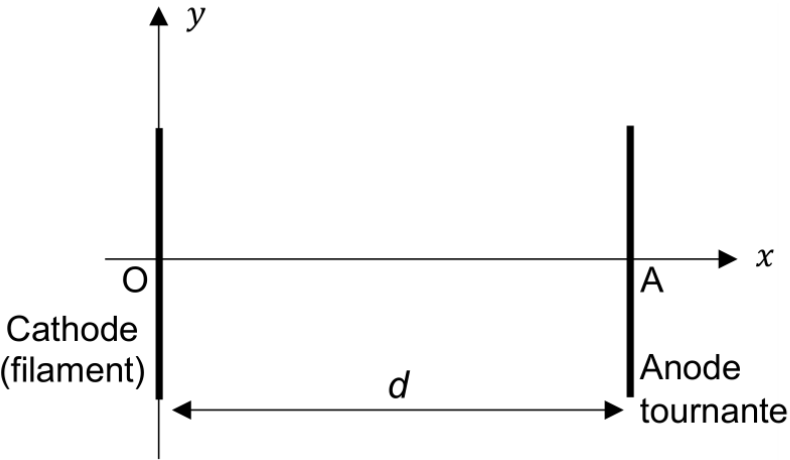

La radiographie réalisée par un scanner à rayons X est une technique
d’imagerie médicale utile dans le diagnostique de nombreuses
pathologies.
Le scanner crée un faisceau à rayons X à l’aide d’un tube à rayons X ou
de Coolidge.
Fonctionnemnent d’un scanner

Dans ce tube à rayons X, une tension élevée \(U\) est maintenue entre un filament cathodique. borne négative, et une anode tournante, norne positive (doc. [doc5] et [doc6]). Un courant électrique provoque l’échauffement d’un filament situé à la cathode. L’agitation des électrons présents augente et une partie d’entre eux est éjectée du filament au point \(O\), avec une vitesse négligeable. La tension \(U\) accélère les électrons du point \(O\) vers l’anode en tungstène. Denevus très énergétiques, ils frappent l’anode, ce qui produit des rayons X. Pour obtenir ces rayons X, chaque électron doit avoir acquis une énergie cinétique égale à 6,4E-15 J au minimum.
Schéma du tube à rayons X

Schéma simplifié

Le but de cet exercice est de calculer la tension à appliquer entre
la cathode et l’anode pour que le faisceau d’électrons parvienne à
provoquer l’émission de photons X au niveau de l’anode. On considèrera
l’électrons comme système d’étude assimilé à un point matériel dont on
négligera le poids. Son mouvement sera étudié dans le référentiel
terrestre considéré comme galiléen. on mouvement sera étudié dans un
référentiel terrestre considéré comme galiléen. À l’instant initial,
l’électron est situé au point \(O\) et
sa vitesse est considérée comme nulle.
Masse de l’électron : \(m = \SI{9,1E31}{kg}\)
Charge de l’électrons : \(q = -e = \SI{-1,6E-19}{C}\)
Reproduire le doc. [doc6] puis tracer, entre la cathode et l’anode, sans préciser d’échelle :
le vecteur champ électrique supposé uniforme \(\vv{E}\)
la force \(\vv{F}\) que subit un électron situé en un point de l’axe (\(0x\))
Donner l’expression vectorielle de \(\vv{F}\) en fonction de \(e\) et \(\vv{E}\).
Montrer que les coordonnées du vecteur accélération \(\vv{a}\) de l’électron, exprimées dans le repère (\(Oxy\)) du doc. [doc6], sont \(a_x = \dfrac{e\cdot U}{m \cdot d}\) et \(a_y = 0\).
En déduire le coordonnées du vecteur vitesse de l’électron selon l’axe (\(Ox\)), notée \(v_x\). Établir que \(x\) d’écrit \(\dfrac{1}{2} \cdot \left(\dfrac{e\cdot U}{m \cdot d}\right) \cdot t^2\).
Donner l’expression litterale de \(T_A\), l’instant où l’électron atteint l’anode (au point \(A\)) située à la distance \(d\) de \(O\)
Grâce aux deux questions précédentes, en déduire que l’expression de la vitesse de l’électron au niveau de l’anode est \(v_A = \sqrt{\dfrac{2\cdot e \cdot U}{m}}\).
Répondre à la problématique de l’exercice "trouver la tension minimale à appliquer entre la cathode et l’anode pour que le faisceau d’électron parvienne à provoquer l’émission de photons X an niveau de l’anode".